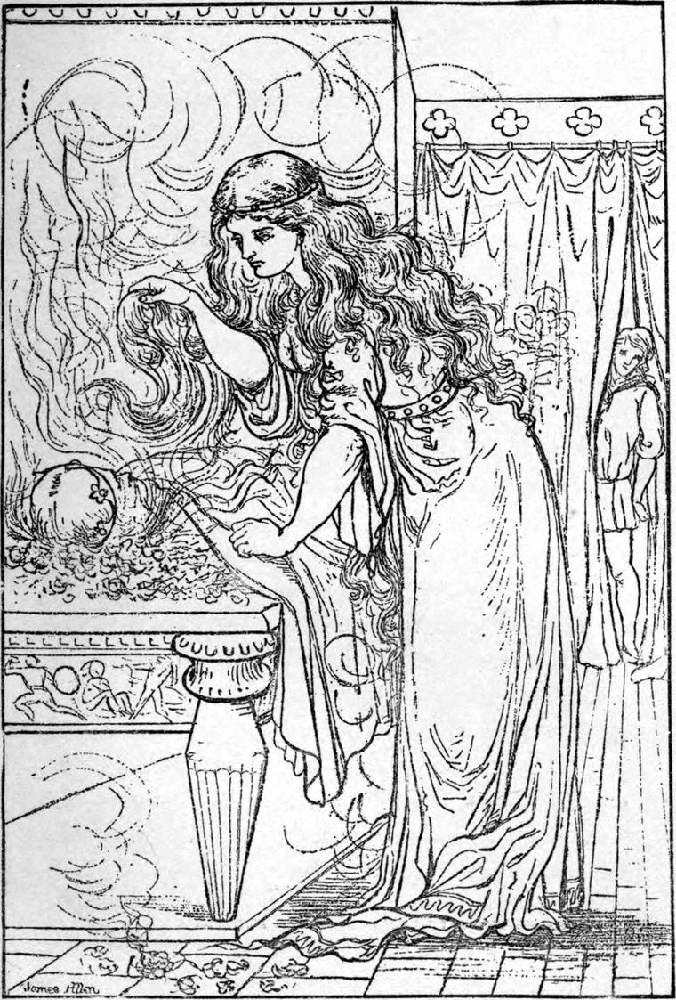

Things in the palace were in a strange condition: the king playing with a child and dreaming wise dreams, waited upon by a little princess with the heart of a queen, and a youth from the mines, who went nowhere, not even into the king's chamber, without his mattock on his shoulder and a horrible animal at his heels; in a room nearby the colonel of his guard, also in bed, without a soldier to obey him; in six other rooms, far apart, six miscreants, each watched by a beast-jailer; ministers to them all, an old woman and a page; and in the wine cellar, forty-three animals, creatures more grotesque than ever brain of man invented. None dared approach its gates, and seldom one issued from them.
All the dwellers in the city were united in enmity to the palace. It swarmed with evil spirits, they said, whereas the evil spirits were in the city, unsuspected. One consequence of their presence was that, when the rumour came that a great army was on the march against Gwyntystorm, instead of rushing to their defences, to make new gates, free portcullises and drawbridges, and bar the river, each band flew first to their treasures, burying them in their cellars and gardens, and hiding them behind stones in their chimneys; and, next to rebellion, signing an invitation to His Majesty of Borsagrass to enter at their open gates, destroy their king, and annex their country to his own.
The straits of isolation were soon found in the palace: its invalids were requiring stronger food, and what was to be done? For if the butchers sent meat to the palace, was it not likely enough to be poisoned? Curdie said to Derba he would think of some plan before morning.
But that same night, as soon as it was dark, Lina came to her master, and let him understand she wanted to go out. He unlocked a little private postern for her, left it so that she could push it open when she returned, and told the crocodile to stretch himself across it inside. Before midnight she came back with a young deer.
Early the next morning the legserpent crept out of the wine cellar, through the broken door behind, shot into the river, and soon appeared in the kitchen with a splendid sturgeon. Every night Lina went out hunting, and every morning Legserpent went out fishing, and both invalids and household had plenty to eat. As to news, the page, in plain clothes, would now and then venture out into the market place, and gather some.
One night he came back with the report that the army of the king of Borsagrass had crossed the border. Two days after, he brought the news that the enemy was now but twenty miles from Gwyntystorm.
The colonel of the guard rose, and began furbishing his armour—but gave it over to the page, and staggered across to the barracks, which were in the next street. The sentry took him for a ghost or worse, ran into the guardroom, bolted the door, and stopped his ears. The poor colonel, who was yet hardly able to stand, crawled back despairing.
For Curdie, he had already, as soon as the first rumour reached him, resolved, if no other instructions came, and the king continued unable to give orders, to call Lina and the creatures, and march to meet the enemy. If he died, he died for the right, and there was a right end of it. He had no preparations to make, except a good sleep.
He asked the king to let the housemaid take his place by His Majesty that night, and went and lay down on the floor of the corridor, no farther off than a whisper would reach from the door of the chamber. There, with an old mantle of the king's thrown over him, he was soon fast asleep.
Somewhere about the middle of the night, he woke suddenly, started to his feet, and rubbed his eyes. He could not tell what had waked him. But could he be awake, or was he not dreaming? The curtain of the king's door, a dull red ever before, was glowing a gorgeous, a radiant purple; and the crown wrought upon it in silks and gems was flashing as if it burned! What could it mean? Was the king's chamber on fire? He darted to the door and lifted the curtain. Glorious terrible sight!
A long and broad marble table, that stood at one end of the room, had been drawn into the middle of it, and thereon burned a great fire, of a sort that Curdie knew—a fire of glowing, flaming roses, red and white. In the midst of the roses lay the king, moaning, but motionless. Every rose that fell from the table to the floor, someone, whom Curdie could not plainly see for the brightness, lifted and laid burning upon the king's face, until at length his face too was covered with the live roses, and he lay all within the fire, moaning still, with now and then a shuddering sob.

And the shape that Curdie saw and could not see, wept over the king as he lay in the fire, and often she hid her face in handfuls of her shadowy hair, and from her hair the water of her weeping dropped like sunset rain in the light of the roses. At last she lifted a great armful of her hair, and shook it over the fire, and the drops fell from it in showers, and they did not hiss in the flames, but there arose instead as it were the sound of running brooks.
And the glow of the red fire died away, and the glow of the white fire grew grey, and the light was gone, and on the table all was black—except the face of the king, which shone from under the burnt roses like a diamond in the ashes of a furnace.
Then Curdie, no longer dazzled, saw and knew the old princess. The room was lighted with the splendour of her face, of her blue eyes, of her sapphire crown. Her golden hair went streaming out from her through the air till it went off in mist and light. She was large and strong as a Titaness. She stooped over the table-altar, put her mighty arms under the living sacrifice, lifted the king, as if he were but a little child, to her bosom, walked with him up the floor, and laid him in his bed. Then darkness fell.
The miner boy turned silent away, and laid himself down again in the corridor. An absolute joy filled his heart, his bosom, his head, his whole body. All was safe; all was well. With the helve of his mattock tight in his grasp, he sank into a dreamless sleep.